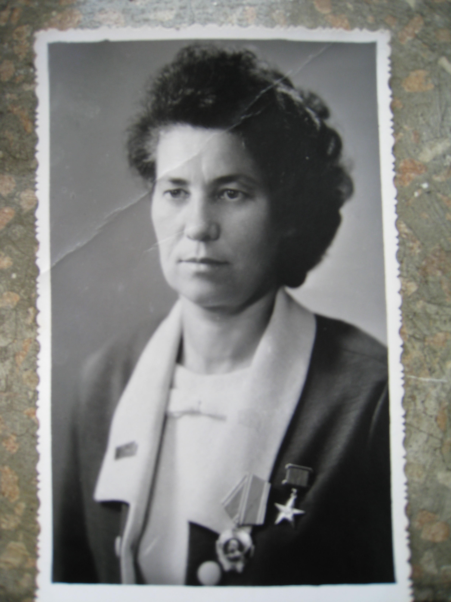

На основі зібраного і систематизованого матеріалу з метою формування у молодого покоління національної свідомості, любові до рідної землі, свого народу, розуміння нерозривного взаємозв’язку минулого, сучасного та майбутнього України 30 квітня 1998 року у приміщенні середньої загальноосвітньої школи №74 міста Львова засновано кімнату-музей Марійки Підгірянки - поетеси, члена Спілки письменників України, яка останні роки свого життя провела в Рудно.
Історія музею
1998 року у приміщенні середньої загальноосвітньої школи №74 міста Львова засновано кімнату-музей Марійки Підгірянки. Профіль музею:літературний.
Пошуково-дослідницька робота проводилася з 1995 по 1998рр. вчителями та учнями школи під керівництвом ініціатора створення кімнати-музею учительки української мови і літератури Кучеренко Євгенії Маркіянівни, а також заступника директора Шкурпило Марії Григорівни і директора школи Юрківа Михайла Федоровича.
Сьогодні у кімнаті-музеї працює рада музею, що складається з учителів та учнів школи. Керівником кімнати-музею є Карбовник Ірина Адамівна.Учні – екскурсоводи проводять екскурсії для учнів початкової школи (від 15 до 30 хвилин) та школярів 5-6-х класів і усіх бажаючих ( 45-60 хвилин).